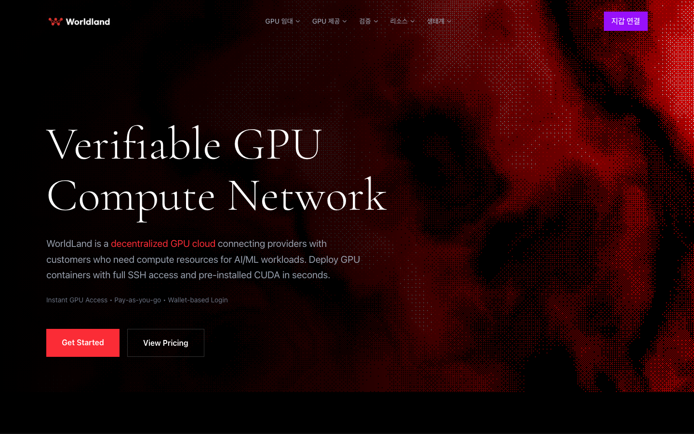
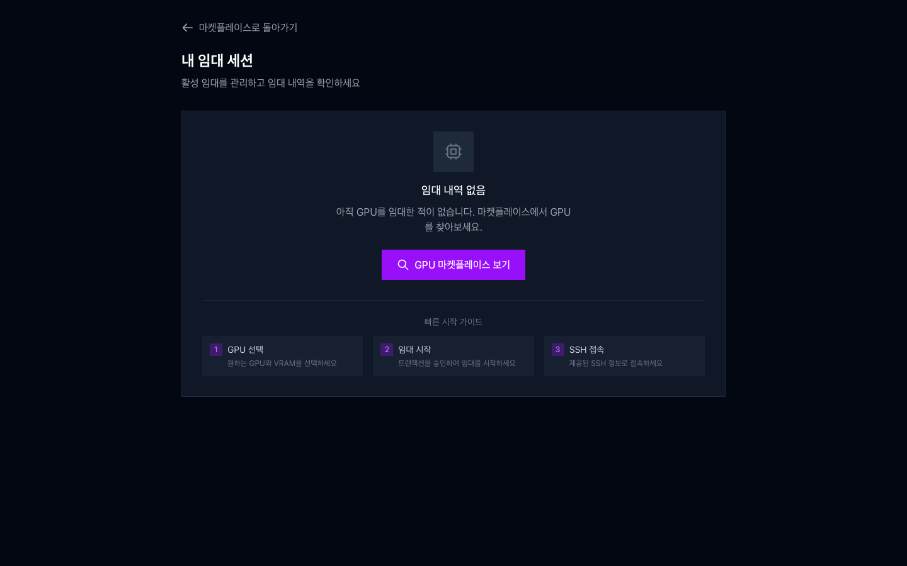

01한 줄 요약
돈이 확인되기 전에는 자원을 내주지 않고, 연결이 끊겨도 놓친 이벤트를 다시 읽는 렌탈 마켓 백엔드를 만들었습니다.
월드랜드는 리버밴스가 만든 EVM 호환 블록체인이고, 이 마켓에서 공급자는 GPU 머신을 올리고 가격을 정합니다. 이용자는 토큰을 예치하고 SSH로 접속하는 GPU 컨테이너를 빌립니다. 공급자는 명령 한 줄로 머신을 Kubernetes 워커로 붙이고, 이용자는 지갑으로 결제한 뒤 GPU Pod를 받습니다.
설계에서 가장 신경 쓴 것은 정상 흐름이 아니라 실패 상황이었습니다. 결제는 됐는데 Pod가 안 뜨면 어떻게 되는지, 같은 결제 해시가 두 번 오면 어떻게 되는지, 네트워크가 끊겼다 돌아오면 어떻게 되는지입니다. 아래 도식은 정상 흐름을 먼저 보이고, 이런 실패 상황을 탭으로 하나씩 바꿔 끼워 보여 줍니다.
- 맡은 일
- Hub 백엔드와 노드 SDK, 렌탈 정산 컨트랙트를 맡았습니다. 같은 기간에 웹 화면도 만들었고, NFT 마켓과 Faucet 컨트랙트를 월드랜드 메인넷에 배포했습니다.
- 팀원
- 노드 SDK의 첫 prototype, kubeadm control plane 구축 가이드, 마이닝 노드 이미지는 팀원이 만들었습니다. 중개 서버의 초기 뼈대도 제가 시작하기 전부터 있던 코드입니다.
02전체 구조
시스템은 네 부분입니다. 공급자 머신에 설치하는 노드 SDK(Go), 렌탈을 중개하고 노드를 인증하는 Hub(Go), 예치와 렌탈 시작과 종료, 사용 시간 기반 비용 계산을 맡는 체인 위 컨트랙트, 그리고 지갑 연결과 GPU 목록, 임대 시작, 세션 확인을 보여 주는 프론트엔드(Next.js)입니다.
돈의 기록은 체인이, 자원의 상태는 Kubernetes가 갖고, Hub는 둘을 이어 줍니다. Hub가 직접 체인에 쓰지 않아서 서버에 지갑 키를 두지 않습니다. 설계 원칙은 둘이 어긋나면 체인 기록을 기준으로 삼는 것입니다.
- 공급자 노드는 인증서로 Hub에 연결하고, Hub가 준 join 명령으로 클러스터에 합류합니다.
- 이용자가 프론트엔드에서 GPU를 고르면 Hub가 빌릴 수 있는 노드 목록을 줍니다.
- 이용자가 컨트랙트에서 렌탈을 시작하는 거래를 보냅니다.
- Hub의 확인 워커가 영수증을 읽고 검사를 통과하면 확인합니다.
- 확인된 렌탈에만 Hub가 공급자 클러스터에 Pod를 만듭니다.
- 렌탈이 끝나면 체인이 비용을 계산해 예치금에서 공급자에게 옮기고, Hub는 종료 이벤트를 받아 세션을 닫습니다.
설계 이유
- Hub는 체인에 거래를 보내지 않습니다. 체인에 쓰는 일은 항상 이용자나 공급자 지갑이 하므로, 서버가 지갑 키를 들고 있을 필요가 없어서 키 관리 위험이 줄어듭니다.
- 세션과 체인 거래는 이벤트가 아니라 이용자가 낸 해시로 이었습니다. 이벤트가 도착하는 순서에 기대지 않기 위해서입니다.
- 렌탈 시작 이벤트에는 Hub가 아무 일도 하지 않습니다. 시작 판단을 영수증 검사 한 곳으로 모았습니다.
Akash Network와 비교
Akash는 Order, Bid, Lease로 이어지는 경매형 구조입니다(Akash 문서). 월드랜드는 공급자가 가격을 걸어 두고 이용자가 고르는 고정가 구조로 단순하게 했습니다. 정산도 다릅니다. 월드랜드 컨트랙트는 렌탈을 시작할 때 잔고를 잠그지 않고, 사용 시간만큼 종료할 때 예치금에서 차감합니다. Akash는 Kubernetes 위에 provider 서비스를 두는데, 월드랜드도 V3 이후 같은 방향으로 정리했습니다.
03렌탈 생애주기
핵심 원칙은 결제를 확인한 뒤에만 Pod를 만드는 것입니다. Pod는 공급자의 실제 자원이라서, 돈이 확인되기 전에 내주면 대가 없이 GPU를 쓰고 사라질 수 있기 때문입니다. 이를 위해 이벤트를 기다리지 않고, 이용자가 낸 해시로 영수증을 직접 읽어 확인합니다. 대신 해시가 체인에 반영될 때까지 대기 상태가 길어질 수 있는 비용이 있습니다.
세션은 다섯 상태 사이를 정해진 조건으로만 움직입니다.
- 대기 세션은 해시 제출, 영수증 확인, Pod 생성을 거치면 실행 중이 됩니다.
- 대기 세션은 영수증 검사나 Pod 생성에 실패하면 실패로, 이용자가 취소하면 취소로 닫힙니다. 해시 없이 10분이 지나면 정리됩니다.
- 실행 중 세션은 체인의 종료 이벤트, 만료, Pod 삭제 감지로 종료됩니다. Pod가 실패하거나 24시간 동안 갱신이 없으면 실패로 닫힙니다.
- 종료, 실패, 취소 상태에서는 다른 상태로 돌아가지 않습니다. 닫힌 세션은 다시 살아나지 않고, 새로 만들어야 합니다.
04체인 리스너
Hub는 체인에서 렌탈 종료 같은 이벤트를 받아야 합니다. 연결은 언제든 끊길 수 있으므로, 끊기지 않게 하는 대신 끊겼다 돌아오면 마지막으로 처리한 지점부터 다시 읽고 같은 거래를 두 번 처리하지 않게 만들었습니다. 이 방식에 남은 한계도 함께 적었습니다. 도식의 블록 번호는 설명용 예시입니다.
05노드 설치와 합류
공급자는 명령 한 줄로 머신을 클러스터 노드로 만듭니다.
./node worker -hub-http <Hub 주소> -private-key-file <키 파일> -master-wallet <지갑 주소>이 한 줄 뒤에는 점검, 설치, 런타임 설정, 토큰 받기, 합류, 라벨 달기의 여섯 단계가 있습니다. 합류한 뒤에는 노드 데몬이 mTLS로 Hub와 연결을 유지합니다. 도식에서 설치가 중간에 멈춘 경우와, 연결이 끊긴 경우를 탭으로 볼 수 있습니다.
06버전 진화
2026년 2월 초 일주일 사이에 노드 SDK의 구조가 V1, V2, V3의 세 가지 구조를 거쳤습니다. 같은 시기 Hub도 Kubernetes 전용으로 정리했습니다. 노드가 하던 임대 실행이 Hub와 Kubernetes로 옮겨 간 과정을 도식으로 정리했습니다.
Hub는 같은 시기에 V2, V3을 거쳐 V4에서 Kubernetes 전용 구조가 되었고, 여러 사용자가 한 노드를 나눠 쓰는 멀티테넌트 노드 공유도 이때 들어갔습니다.
07케이스 핸들링
실패 상황 일곱 가지를 상황, 처리, 설계 의도로 정리했습니다. 앞의 도식에서 본 상황과 도식에 담지 못한 상황이 함께 있습니다.
결제가 안 됐거나 잘못된 거래인데 Pod를 달라고 함
- 상황
- 결제하지 않았거나 렌탈과 무관한 거래의 해시를 내고 GPU Pod를 요청합니다.
- 처리
- 영수증을 읽어서 거래 성공 여부, 컨트랙트 주소, 이벤트 종류, 이용자와 공급자 일치를 모두 확인합니다. 하나라도 틀리면 세션을 실패로 닫고, 확인이 끝나기 전에는 Pod를 만들지 않습니다.
- 설계 의도
- 돈 확인이 자원 제공보다 먼저여야 공급자가 대가 없이 GPU를 내주지 않습니다.
같은 결제 해시를 다른 세션에 쓰거나 같은 요청을 두 번 보냄
- 상황
- 이미 쓰인 결제 해시를 다른 세션에서 다시 내거나, 같은 세션에서 같은 요청을 두 번 보냅니다.
- 처리
- 다른 세션이면 409로 거부하고, 같은 세션이면 처음의 접수 응답을 그대로 돌려줍니다. 데이터베이스에는 부분 unique 인덱스를 걸어 두었습니다.
- 설계 의도
- 하나의 결제로 GPU를 두 번 받는 것과, 이중 요청에서 생기는 오류를 둘 다 막습니다.
Pod는 만들어졌는데 서버가 죽거나 상태 전환에 실패함
- 상황
- Pod를 만든 직후에 서버가 멈추거나 세션 상태를 바꾸지 못합니다.
- 처리
- 재시도하면 같은 이름의 기존 Pod를 찾아 같은 접속 정보를 돌려줍니다. 상태 전환에 실패하면 방금 만든 Pod의 삭제를 시도합니다.
- 설계 의도
- 재시도해도 Pod가 중복되지 않게 하고, 주인 없는 Pod를 줄입니다.
체인 RPC 연결이 끊김
- 상황
- 체인 노드와의 연결이 끊겼다 돌아오는 사이에 이벤트가 생깁니다.
- 처리
- 1초에서 60초까지 간격을 늘리며 횟수 제한 없이 재연결하고, 여러 RPC 주소를 순서대로 시도합니다. 처리에 성공할 때마다 checkpoint를 저장하고 뒤로 가지 않게 합니다. 재시작하면 checkpoint 다음 블록부터 1000블록씩 놓친 로그를 다시 읽고, 같은 거래 해시는 unique 키로 두 번 처리하지 않습니다.
- 설계 의도
- 끊긴 사이의 이벤트를 마지막 처리 지점부터 다시 읽고, 다시 읽어도 두 번 처리하지 않게 합니다.
공급자 노드와 Hub의 연결이 끊김
- 상황
- 네트워크나 Hub 재시작으로 노드의 연결이 끊깁니다.
- 처리
- 노드가 TLS 1.3 mTLS로 5초에서 60초까지 간격을 늘려 자동으로 다시 연결합니다. Hub는 연결 인증서의 이름으로 어느 공급자의 연결인지 식별합니다. TLS 1.2 서버를 거부하는 것은 테스트로 확인했습니다.
- 설계 의도
- 일시적인 단절에 사람이 개입하지 않게 하고, 간격을 늘려서 Hub에 재연결이 몰리는 것을 막습니다.
공급자 머신의 설치가 중간에 멈추거나 containerd 설정이 어긋나 있음
- 상황
- 머신에 일부 구성요소가 이미 있거나, Docker가 깔아 둔 containerd의 CRI가 꺼져 있습니다.
- 처리
- 이미 있는 항목은 건너뛰고, Kubernetes는 v1.29로 고정해 자동 업그레이드를 막습니다. CRI가 꺼진 containerd는 설정을 다시 만들고, nvidia 설정은 별도 파일로 분리해서 덮어쓰이지 않게 합니다. Hub가 준 join 명령은 kubeadm join으로 시작하는지 확인한 뒤 shell 없이 실행합니다.
- 설계 의도
- 명령 한 줄로 다양한 머신에 붙이되, 설치가 중간에 멈춘 머신은 같은 명령으로 이어 가고 명령 주입을 막습니다.
이용자 잔고가 부족하거나 결제 없이 방치된 세션
- 상황
- 예치금이 모자란 이용자가 렌탈을 요청하거나, 해시를 내지 않은 채 세션이 남습니다.
- 처리
- 요청 시점에 1시간 요금 이상의 예치가 없으면 요청을 받지 않습니다. 해시 없이 10분이 지난 대기 세션은 정리합니다. 다만 설정이 빠져 있으면 예치 검사가 꺼지는 한계가 있습니다.
- 설계 의도
- 쓰지도 못할 세션과 자원 점유를 처음에 차단합니다.
08화면
제가 만든 웹 화면 가운데 두 장입니다.


09배운 점
돈과 자원이 함께 움직이는 시스템에서는 결제를 확인한 뒤에 자원을 내주는 순서를 한곳에서 지켜야 합니다. 이 순서를 여러 곳에 나누면 어느 한 곳이 빠졌을 때 대가 없이 자원이 나갑니다.
끊김은 예외가 아니라 평상시라고 보고 설계해야 합니다. 체인 리스너에서는 마지막 처리 위치를 저장하는 것과 같은 거래를 두 번 처리하지 않는 것을 짝으로 두어야 다시 읽어도 안전했고, 노드 연결에서는 재연결 간격을 늘려 사람의 개입과 재접속 폭주를 함께 줄였습니다.
단위 실수는 계산으로 확인해야 합니다. 최소 가격을 초당 단위로 넣었더니 시간당으로 환산하면 훨씬 큰 값이 되는 것을 계산으로 찾아 고쳤고, 프론트엔드에도 초당으로 저장하고 시간당으로 보여 준다는 주석을 남겼습니다. 다만 그 뒤 구조가 바뀌면서 같은 검증이 빠진 부분이 남은 과제에 있습니다.
남은 과제
아래는 코드를 다시 읽으며 확인한 한계입니다. 실행으로 재현해 본 것은 아니고, 고쳤다는 뜻도 아닙니다.
- 결제 확인 뒤 Pod 생성이 실패하면 세션은 실패로 닫히지만 체인의 렌탈은 열려 있고, 환불 경로가 없습니다.
- 해시가 체인에 반영되지 않으면 세션이 계속 대기하고, 대기 세션도 이용자의 새 렌탈을 막습니다.
- 체인 리스너는 확정 블록을 기다리지 않고, 블록이 뒤집히는 경우를 처리하지 않습니다.
- 체인 리스너는 처리에 실패한 이벤트를 실패 기록에 저장만 하고 다시 처리하지 않으며, 같은 거래에 이벤트가 여러 개이면 둘째부터 건너뜁니다.
- Hub의 정산 금액이 체인의 비용과 다르게 계산되는 경로가 있습니다. 정산 작업이 사용 시간을 분 단위로 올려 계산한 값으로 체인 비용을 덮어쓰고, Hub가 먼저 만료 처리한 세션에 체인의 종료 이벤트가 늦게 오면 반영되지 않습니다.
- 컨트랙트에는 렌탈 중 출금을 막는 검사와 부분 정산이 없어서, 쓴 만큼만 정산하고 남은 돈을 돌려준다고 단정하지 않습니다.
- 노드 인증서를 폐기하는 기능이 없고, 설치기는 다시 실행하면 이미 합류한 노드를 초기화합니다.
- Hub는 heartbeat를 공급자 단위로만 구분해서, 한 공급자의 여러 노드를 개별로 식별하지 못합니다.
- 노드의 개인키를 Hub가 만들어 응답으로 내려 주는 방식이라 노드가 자기 키를 직접 만들지 않습니다. 인증서가 만료된 뒤 다시 발급받는 경로도 없어서, 노드는 60초 간격 재연결만 반복합니다.
- V3에서는 최소 가격 검증이 빠졌고, 기본 가격이 문서에 적힌 값과 크게 다르게 코드에 고정되어 있습니다.